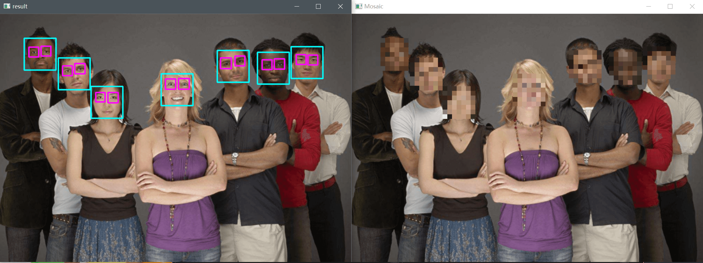

前言
采用Opencv官方训练好的Harrcascades分类器进行人脸识别和对人脸打马赛克。
涉及到的一些知识
马赛克原理
将要加马赛克的区域划分成若干个小矩形区域，然后每个小矩形区域的值都取该小矩形区域左上角的值。
CascadeClassifier 级联分类器
分类器 ： 判别某个事物是否属于某种分类的器件，两种结果：是、否 。级联分类器 ： 可以理解为将N个单类的分类器串联起来。如果一个事物能属于这一系列串联起来的的所有分类器，则最终结果就是 true，若有一项不符，则为 false。
CascadeClassifier 为 OpenCV 下用来做目标检测的级联分类器的一个类。该类中封装的目标检测机制，简而言之是滑动窗口机制 + 级联分类器 的方式。
**CascadeClassifier检测的基本原理：**检测的时候可以简单理解为就是将每个固定size特征（检测窗口）与输入图像的同样大小区域比较，如果匹配那么就记录这个矩形区域的位置，然后滑动窗口，检测图像的另一个区域，重复操作。由于输入的图像中特征大小不定，比如在输入图像中眼睛是50x50的区域，而训练时的是25x25，那么只有当输入图像缩小到一半的时候，才能匹配上，所以这里还有一个逐步缩小图像，也就是制作图像金字塔的流程。
由于人脸可能出现在图像的任何位置，在检测时用固定大小的窗口对图像从上到下、从左到右扫描，判断窗口里的子图像是否为人脸，这称为滑动窗口技术（sliding window）。为了检测不同大小的人脸，还需要对图像进行放大或者缩小构造图像金字塔，对每张缩放后的图像都用上面的方法进行扫描。由于采用了滑动窗口扫描技术，并且要对图像进行反复缩放然后扫描，因此整个检测过程会非常耗时。
我的简单理解就是最终的检测对象需要符合通过多个分类器的条件，而这个过程的实现是通过滑动窗口的方法去检测，将窗口按一定步长和不断缩放比例对检测对象依次匹配。
detectMultiScale函数
1 2 3 4 5 6 CV_WRAP void CascadeClassifier::detectMultiScale ( InputArray image, CV_OUT std::vector<Rect>& objects, double scaleFactor = 1.1 , int minNeighbors = 3 , int flags = 0 , Size minSize = Size(), Size maxSize = Size() )
image：待检测图片，一般为灰度图像加快检测速度；
objects：被检测物体的矩形框向量组，每个矩形包含被检测的对象。
scaleFactor：表示在前后两次相继的扫描中，搜索窗口的比例系数。默认为1.1 即每次搜索窗口依次扩大10%。该值越大搜索速度越快，但可能会错失一些信息。最小值为 1。
minNeighbors：表示构成检测目标的相邻矩形的最小个数(默认为 3 个)。如果min_neighbors 为 0, 则函数不做任何操作就返回所有的被检候选矩形框，这种设定值一般用在用户自定义对检测结果的组合程序上；默认表示每一个目标至少要被检测到 3 次才算是真的目标。
flags：要么使用默认值，要么使用 CV_HAAR_DO_CANNY_PRUNING，如果设置为 CV_HAAR_DO_CANNY_PRUNING，那么函数将会使用Canny边缘检测来排除边缘过多或过少的区域，因此这些区域通常不会是人脸所在区域；
minSize：对象最小的大小，小于该值的对象被忽略。
maxSize：对象最大的大小，大于该值的对象被忽略。
Haar特征分类器
opencv实战3： CascadeClassifier+Haar特征进行人脸检测_haarcascades_cuda_菜鸟知识搬运工的博客-CSDN博客
实验步骤
加载图像或视频
创建分类器
检测人脸（眼睛）。眼睛如果要检测的话，可以在人脸检测出来后确定人脸矩形框，再这个基础上检测，可以提高运行效率
添加马赛克。对人脸区域进行像素值修改。
代码
xml 文件在安装 opencv 下的文件里面， 你的路径\opencv\sources\data\haarcascades\下，里面有官方训练好的分类器。
1 2 3 4 5 6 7 8 9 10 11 12 13 14 15 16 17 18 19 20 21 22 23 24 25 26 27 28 29 30 31 32 33 34 35 36 37 38 39 40 41 42 43 44 45 46 47 48 49 50 51 52 53 54 55 56 57 58 59 60 61 62 63 64 65 66 67 68 69 70 71 72 73 74 75 76 77 78 79 80 81 82 83 84 85 86 87 88 89 90 91 92 93 94 95 96 97 98 99 100 101 102 103 104 105 106 107 108 109 110 111 112 113 114 115 116 117 118 119 120 121 122 123 124 125 126 127 128 129 130 131 132 133 134 135 136 137 138 139 140 141 142 143 144 145 146 147 148 149 150 #include <opencv2/opencv.hpp> #include <iostream> #define isMosaic using namespace std;using namespace cv;string face_cascade = "C:\\Program Files\\opencv\\sources\\data\\haarcascades\\haarcascade_frontalface_default.xml" ; string eye_cascade = "C:\\Program Files\\opencv\\sources\\data\\haarcascades\\haarcascade_eye.xml" ; void Image_Demo () void Video_Demo () void Detection (Mat& src) int main () Video_Demo (); waitKey (0 ); destroyAllWindows (); return 0 ; } void Image_Demo () Mat src = imread ("G:\\opencv-python-image\\images\\persons.png" ); if (src.empty ()) { cout << "could not load image" << endl; exit (-1 ); } imshow ("src" , src); Detection (src); imshow ("result" , src); } void Video_Demo () VideoCapture capture ("G:\\opencv-python-image\\images\\01.mp4" ) ; if (!capture.isOpened ()) { cout << "could not load video file" << endl; exit (-1 ); } Mat frame, gray; while (capture.read (frame)) { char key = waitKey (1 ); if (key == 27 ) break ; imshow ("frame" , frame); Detection (frame); imshow ("result" , frame); } capture.release (); } void Detection (Mat& src) #ifdef isMosaic Mat Mosaic; src.copyTo (Mosaic); #endif Mat gray; cvtColor (src, gray, COLOR_BGR2GRAY); CascadeClassifier ccface, cceye; if (!ccface.load (face_cascade)) { cout << "could not load face xml file" << endl; exit (-1 ); } if (!cceye.load (eye_cascade)) { cout << "could not load eye xml file" << endl; exit (-1 ); } vector<Rect> faces; vector<Rect> eyes; clock_t startime = clock (); ccface.detectMultiScale (gray, faces, 1.7 , 5 ); for (int i = 0 ; i < faces.size (); i++) { rectangle (src, faces[i], Scalar (255 , 255 , 0 ), 2 , 8 ); Mat roi = gray (Rect (faces[i].x, faces[i].y, faces[i].width, faces[i].height)); cceye.detectMultiScale (roi, eyes, 1.1 , 2 ); for (int j = 0 ; j < eyes.size (); j++) { rectangle (src, Rect (faces[i].x + eyes[j].x, faces[i].y + eyes[j].y, eyes[j].width, eyes[j].height), Scalar (255 , 0 , 255 ), 2 , 8 ); } } clock_t endtime = clock (); cout << "waste time: " << endtime - startime << endl; #ifdef isMosaic int step = 10 ; cout << "faces.size: " << faces.size ()<<endl; for (int t = 0 ; t < faces.size (); t++) { int x = faces[t].x; int y = faces[t].y; int width = faces[t].width; int height = faces[t].height; for (int i = y; i < (y + height); i += step) { for (int j = x; j < (x + width); j += step) { for (int k = i; k < (step + i) && (y + height); k++) { for (int m = j; m < (step + j) && (x + width); m++) { for (int c = 0 ; c < 3 ; c++) { Mosaic.at <Vec3b>(k, m)[c] = Mosaic.at <Vec3b>(i, j)[c]; } } } } } } imshow ("Mosaic" , Mosaic); #endif }
实验图

要点
检测目标对象主要在于参数的选取：scaleFactor minNeighbors，scaleFactor 越大检测速度越快，但可能会检测不到一些目标对象；minNeighbors 是对目标对象进一步筛选，小于该值的 越大检测到的目标对象可能会很少。
参考资料
OpenCV C++案例实战十三《人脸打马赛克》_opencv检测马赛克_Zero___Chen的博客-CSDN博客